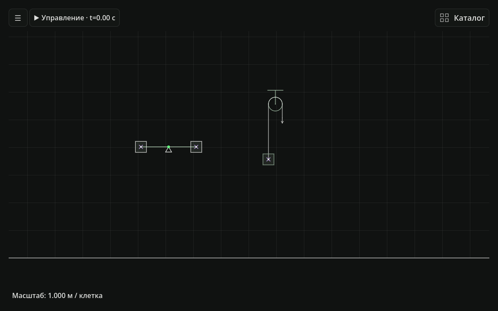

Откройте лабораторию
Скачайте архив, распакуйте его и запустите PLab.exe. В меню нажмите «Создать сцену».
Для школьников, изучающих механику: собирайте опыты, меняйте параметры и проверяйте движение на графиках.
Скачать PLabВернитесь к любому моменту опыта.
Таймлайн с перемоткой уже есть в версии 0.18.0.

01 / КАК ЭТО РАБОТАЕТ
Что изменится, если увеличить массу?
Проверьте это в собственной сцене.
Скачайте архив, распакуйте его и запустите PLab.exe. В меню нажмите «Создать сцену».
Перенесите брусок, пружину или рычаг из каталога. Укажите массу, силы и начальную скорость.
Нажмите «Старт», изучите показания и графики. Перемотайте опыт, измените условия и сравните движение.
02 / ОТ ФОРМУЛЫ К ДВИЖЕНИЮ
PLab — 2D-лаборатория для школьника, который хочет понять решение задачи по механике. Вместо одного готового рисунка — сцена, где можно менять условия и наблюдать движение.
Открыть инструкцию03 / УСЛОВИЯ ДОСТУПА
Текущую сборку можно скачать без оплаты и регистрации. Опыты и сохранения работают на вашем компьютере.
Платный тариф для организаций пока не объявлен. Условия лицензирования для школы требуют отдельного согласования с автором проекта.
СБОРКА ИЗ ТЕКУЩЕГО ПРОЕКТА
PLab 0.18.0 · Windows x64 · …
Распакуйте ZIP. Запустите PLab.exe.
Файл PLab.pck оставьте рядом.
Windows x64 и видеодрайвер с поддержкой OpenGL 3.3. Устанавливать Godot не требуется. Переносите всю распакованную папку: PLab.exe и PLab.pck должны находиться вместе.
Опыты с движением брусков, силами, пружинами, рычагами, тросами и блоками. Это учебная 2D-модель: тела не опрокидываются, а у отдельных механизмов есть ограничения. Они описаны в инструкции внутри архива.
В архиве находится RELEASE.json с номером версии и контрольными суммами файлов. Сведения о сборке и SHA-256 архива. На странице размещена версия 0.18.0, собранная 17 октября 2026 года. Новые выпуски появляются после обновления страницы автором.